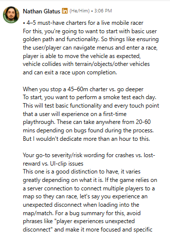
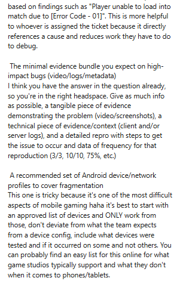
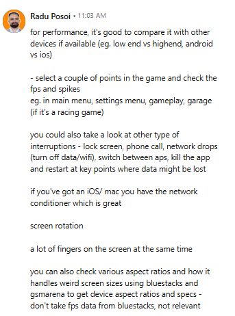
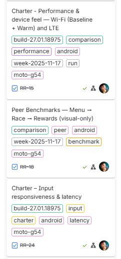
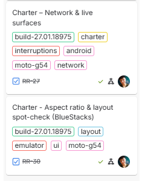
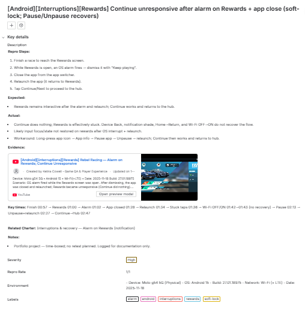
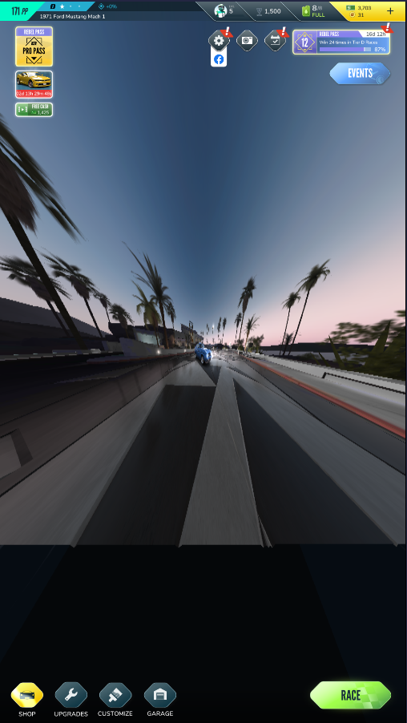

🎮 Rebel Racing - Charter-based Exploratory & Edge-Case Testing (Mobile) - Tested: 17/11/2025–22/11/2025
Introduction
One-week exploratory / edge-case pass on Rebel Racing (Android – Moto g54 5G, Android 15 @2400×1080/120Hz) focused on daily golden-path smoke, interruptions & recovery, device/network variation, and basic UI scaling/readability. I built a small set of charters, ran daily smoke passes across the week, and logged one high-impact soft-lock defect with full evidence and STAR summary.
- Scope: daily golden-path smoke (launch → hub → 1 race → rewards → hub), interruptions & recovery (alarms, notification shade, Home/Return, LTE force-close), UI scaling & readability in core menus, performance & device feel (Wi-Fi vs warm vs LTE), input responsiveness (race + menus), network & live surfaces (Store/Events, Wi-Fi/LTE toggles), and light BlueStacks visual-only checks for 16:9, portrait, and attempted 20:9 aspect ratios.
- Approach: charter-based sessions designed from senior QA insight (Nathan Glatus & Radu Posoi), time-boxed to ~20–45 minutes each, with one smoke pass per day plus focused charters layered on top. High-impact issues were captured with short 1080p videos, clear repro steps, device/network context, and a simple device/network matrix to keep coverage realistic on a single physical phone.
- Outcome: all planned smoke and charter runs completed on Moto g54 with no crashes; one Rewards soft-lock after an alarm + app close (RR-1) captured with 1/1 repro and documented to backlog; LTE felt noticeably slower than Wi-Fi with a results-loading delay; BlueStacks 16:9 looked clean, portrait showed stretched background and tiny text; Android Studio AVD was blocked by Play Store eligibility.
- Evidence: Google Sheets workbook (README, 1-liner summary, charters, session notes, bug log, STAR, daily smoke, device matrix, glossary), YouTube playlists grouped by area (smoke, interruptions, UI scaling, performance, input, network, BlueStacks), and Jira-style bug/STAR summaries suitable for review.
| Studio | Platform | Scope |
|---|---|---|
| Hutch Games | Android (Moto g54 5G - Android 15) | Exploratory & edge-case: smoke runs • interruptions & recovery • UI scaling/readability • performance & device feel • input responsiveness • network & live surfaces |
🎯 Goal
Show how I approach exploratory and edge case testing on a live mobile F2P racer by scoping realistic charters, running daily smoke checks, and capturing any high impact issues with clear repro steps, evidence, and context.
🧭 Focus Areas
- Daily smoke runs
- Interruptions and recovery
- UI scaling and readability
- Input responsiveness in menus and races
- Performance and device feel on WiFi, warm device, and LTE
- Network and live surfaces in Store and Events
- Visual only aspect ratio checks in BlueStacks
📄 Deliverables
- Exploratory and edge case workbook (Google Sheets)
- Bug log and STAR summary (PDF export)
- Evidence videos grouped by area (YouTube playlists)
- Jira style bug and summary examples
- Networking and applied insight notes from senior QA leads
📊 Metrics
| Metric | Value |
|---|---|
| Total Bugs Logged | 1 |
| Critical | 0 |
| Major | 1 |
| Minor | 0 |
| Repro Consistency | 100% (across 1 issue) |
⭐ STAR SUMMARY - Rebel Racing QA (Android)
Situation: One week of exploratory and edge-case testing on Rebel Racing on a Moto g54 5G running Android 15, build 27.01.18975, captured via scrcpy at 1080p on Wi-Fi and LTE.
Task: Keep scope realistic on a single physical device by running daily golden-path smoke checks, then pushing interruptions, UI scaling, performance and network edge cases to see where stability or player experience might break.
Action: Designed charters from the project brief and senior QA insight, ran daily smoke runs, and executed focused sessions for interruptions, scaling, performance, input and network. Captured short 1080p clips with scrcpy and OBS, and tracked results in a Google Sheets workbook with a clear bug log and STAR summary.
Result: All smoke runs passed with no crashes. I found and documented one soft lock in the post-race rewards flow after an alarm and app close (RR-1), captured with full video evidence, plus smaller observations on LTE load delays, warm-device feel, and Bluestacks visual-only behaviour that can inform future testing and device coverage.
🤝 Networking & Applied Insight
During this project I didn’t guess the scope in isolation, I treated it like a mini live-ops assignment and shaped it around advice from senior QA leads.
Nathan Glatus (ex Senior QA / Game Integrity Analyst, Fortnite, Epic Games) helped me set the initial scope. His advice was to treat Rebel Racing as what it is: a live mobile F2P racer, not a lab toy for every possible edge case. That translated into a small set of focused charters rather than a giant “test everything” list: daily golden-path smoke on a single physical device, input and handling tiers, collisions / exits and race flow, and UI scaling and key live surfaces (store, events, hub). He also pushed me to keep runs to realistic 45–60 minute sessions with clear exit criteria, and to write tighter bug reports with strong oracles, clear summaries and bundled evidence (video, device/build metadata, repro steps, repro rate) instead of vague “it feels off” notes. His framing around realistic coverage on an approved device list is why this case study is scoped to one main phone but documented in a way that could scale to a real QA team.
Radu Posoi (Founder, AlkoTech Labs, ex Ubisoft QA Lead) then helped me iterate the scope so it matched how mobile QA is actually run day to day. His feedback led me to define clear performance anchors (hub, pre-race, race start, mid-race, results) instead of vague “seems fine” checks; treat interruptions as a first-class surface covering lock screen, app switching, app kill and recovery; and turn battery / heat / multi-touch stress into dedicated charters rather than random one-off experiments. Because Rebel Racing blocks standard Android Studio emulators on the Play Store, he also recommended using Bluestacks as a visual-only oracle for odd aspect ratios and layout stretch while keeping all real testing and bug reproduction on my physical Moto g54. That combination turned my original “nice to have” ideas into a concrete device and network approach that looks like a small slice of a real mobile QA lab rather than a student project.
Their insight directly shaped the final list of charters, how I recorded device and network context, how I wrote and prioritised bug reports, and the STAR summary for this case study, so the project reads more like a realistic live mobile QA engagement than a purely academic exercise.
| Source | Key takeaway | How I applied it in this project | Evidence |
|---|---|---|---|
|
Nathan Glatus ex Senior QA / Game Integrity Analyst (Fortnite, ex Epic Games) |
Treat Rebel Racing as a live mobile F2P racer and anchor testing in a small set of high-value surfaces instead of trying to “test everything”. Prioritise daily golden-path stability, input and handling tiers, collisions / exits, and UI scaling / live surfaces, and back this with clear charters and strong evidence bundles. |
|
  Click to enlarge |
|
Radu Posoi Founder, AlkoTech Labs (ex Ubisoft QA Lead) |
Iterate the scope so it matches real mobile QA: define performance anchors, treat interruptions and recovery as their own surface, structure battery / heat / multi-touch stress instead of doing random “torture tests”, and use emulators as visual oracles only when the store blocks standard Android Studio emulators. |
|
 Click to enlarge |
📚 JIRA Courses & Application
After my first case study (Battletoads) where I used two beginner Jira courses to learn the basics, I wanted this project to focus more on how work is modelled and organised in Jira day to day. For Rebel Racing I took two short Coursera projects that go deeper into user stories and simple Scrum setups.
Courses completed for this project:
- Create User Stories in Jira (Coursera) – Practised breaking work into epics, user stories and sub-tasks with clear acceptance criteria. This helped me think about Rebel Racing work in terms of “player goals + expected behaviour” instead of just a list of tests.
- How to Create a Jira Scrum Project (Coursera) – Set up a basic Scrum project from scratch with a backlog, a simple sprint board, and clear status transitions (To Do → In Progress → Blocked → Done). Reinforced keeping the workflow lightweight and readable.
Practice in this project:
- Framed test ideas and charters as short “stories” (e.g. interruptions, LTE vs Wi-Fi, Bluestacks visual check) with a clear player goal and expected outcome, then linked the RR-1 defect back to the relevant charter.
- Used a simple Jira-style workflow (To Do / In Progress / Done / Deferred) so each issue told a clear status story without extra admin.
- Logged RR-1 and key observations with consistent titles, short descriptions, and direct links to 1080p evidence clips, mirroring how they’d sit on a real Jira board.
- Kept the issue list small but focused, favouring a few well-written tickets with strong evidence over a noisy backlog of half-baked notes.
🎓 Certificates
| Certificate | Provider | Issued | Evidence |
|---|---|---|---|
| Create User Stories in Jira | Coursera | 2025 |

|
| How to Create a Jira SCRUM Project | Coursera | 2025 |

|
📷 Evidence & Media
These links are the complete artefacts for this project. They contain:
- Overview and scope
- Charters and session notes
- Bug log and STAR summary
- Daily smoke runs and outcomes
- Device and network matrix
- Glossary and methodology notes
| Type | File / Link |
|---|---|
| QA Workbook (Google Sheets) | Open Workbook |
| QA Workbook (PDF Export) | Open PDF |
📌 Core Project Findings - Sessions and Bugs
All planned charters and daily smoke runs were completed on the Moto g54 with no crashes. The build stayed stable across the week, but one high-impact soft lock in the post-race rewards flow was found and logged with full evidence. I also captured smaller observations around LTE load delays, warm-device performance feel, and UI scaling in Bluestacks. The evidence below covers the STAR summary, verified thumbnails, and the bug table with video links.
📁 Jira Board Screenshot - Overview
🗂️ Jira Board - Verified Screenshots (thumbnails)
|  |  |
Click any thumbnail to view the full-size image.
🗂️ Jira - Bug Ticket Layout
|  |
Click thumbnail to view the full-size image.
🐞 Bugs - Summary + Videos
| ID | Title | Sev | Repro | Video |
|---|---|---|---|---|
| RR-1 | [Android][Interruptions][Rewards] Continue button unresponsive after OS alarm + app close | High | 1/1 |

|
Show inline video
If you’re viewing this on github.com, embeds may not display. Use the thumbnail/link above or open this page on the published site (GitHub Pages) to watch inline.
🔍 Other observations (non-blocking)
Smaller UX and performance findings taken from two key runs: an extended LTE race/results run on the Moto g54, and a Bluestacks Portrait visual-only check. These didn’t meet the bar for full bug tickets but are still useful for future tuning or device coverage.
| ID | Observation | Category | Evidence |
|---|---|---|---|
| OBS-01 | [Android][Network][Results] Longer load spinner before Rewards on LTE compared to Wi-Fi | Performance / UX |

|
| OBS-02 | [Android][Device feel] Moto g54 felt warm but stable during the extended LTE run (same session as OBS-01) | Device feel |
Same run as OBS-01; device warmth noted during this session. |
| OBS-03 | [Bluestacks][Visual-only] Portrait mode: background and menu bar backgrounds stretched; buttons/text very small (hard to read). Functional taps OK for this sweep. | Visual-only sanity check |  |
📈 Results
- Completed all planned daily smoke runs and exploratory charters on the Moto g54 without any crashes or hard failures.
- Logged one major defect (RR-1 Rewards soft lock) with clear 1080p evidence and a full bug entry, plus a set of smaller UX and performance observations for future device / network coverage.
- Confirmed the core golden path (launch → race → rewards → hub) stayed stable on baseline Wi-Fi and across most interruption scenarios, with LTE showing slower results loading compared to Wi-Fi. The exception is the RR-1 alarm + app close case described below.
- Rewards soft lock (RR-1): after finishing a race, if an OS alarm fires while the Rewards screen is open and the player then closes and relaunches the app, the post-race Rewards screen can appear with the Continue button unresponsive. Back, notification shade, Home → Return and Wi-Fi toggle do not recover the flow; the practical workaround is to Pause the app from Android app info, then Unpause and relaunch so Continue works again. This was captured with video and documented as a high-severity soft lock.
- LTE results delay: on LTE, the results screen shows a noticeably longer loading spinner before rewards appear compared to the much quicker transition on Wi-Fi. This did not reproduce as a hard failure but is worth tracking as a performance / UX risk.
- Warm device & scaling notes: extended play on the Moto g54 made the device feel warm but not dangerously hot, with no visible frame drops in core races. In Bluestacks Portrait mode, the background and menu bar backgrounds appeared stretched and buttons/text were very small (hard to read). Attempts to force a 20:9 preset were blocked by the emulator, so Bluestacks was used as a visual-only oracle – all real testing stayed on the physical device.
- Performance & device feel: the Moto g54 stayed stable across all runs with no visible stutters or visual hitches during races. LTE produced slower results loading compared to Wi-Fi but did not cause crashes or hard failures.
See Metrics above for the full table of runs and references.
🎮 Peer-style UX benchmark (Rebel Racing vs Asphalt 9)
As a small add on to the main Rebel Racing work, I ran a quick visual only peer benchmark against Asphalt 9. The goal was not to file bugs, but to see how two mobile racers from the same space handle menu clarity, taps to driving, HUD readability and reward pacing, using my own dyslexic and dyscalculic perspective as a lens. The findings below helped me frame Rebel Racing’s UX strengths and risks in a way that is easier to explain to designers and producers.
⭐ MICRO-STAR SUMMARY – Comparative Findings
Situation: During the Rebel Racing project I ran a short visual UX benchmark against Asphalt 9 to understand how similar mobile racers handle menu clarity, taps-to-driving, HUD readability, reward pacing, and return-to-hub flow.
Task: Compare the first-minute path, HUD readability, clarity of labels, reward pacing, and any hiccups or friction points in the standard race loop.
Action: Opened both apps, timed taps-to-driving, reviewed HUD readability, checked clarity of results and reward steps, and noted anything that slowed the player down or was easy to miss (from a dyslexic and dyscalculic tester’s perspective).
Result: Rebel Racing reached driving quicker (4 taps) than Asphalt 9 (6 taps). Asphalt 9 had clearer HUD labels overall, while Rebel Racing contained several readability risks in white-on-bright UI elements.
📊 Summary Metrics
- Taps to driving: Rebel Racing: 4 • Asphalt 9: 6
- Menu clarity: Both strong, but Asphalt 9’s large yellow Play button was clearer
- HUD readability: Asphalt 9: clearer labels • Rebel Racing: some hard-to-read small text and unboxed labels
- Reward pacing: Both smooth; Asphalt 9 had slight friction due to “Next” changing into “Miss Out”
- Hiccups: None observed in either title
| Game | Area / Feature | What happened | Why it matters | Evidence |
|---|---|---|---|---|
| Asphalt 9 | Taps to driving | 6 taps to reach the race | Clear Play CTA; onboarding friction slightly higher than Rebel Racing. |

|
| HUD readability | Large readable labels: “POS”, “DIST”, timer; MPH clearly visible. | High clarity helps dyslexic and dyscalculic players track race state. | Same video as above (visual-only). | |
| Rewards flow | “Next” CTA changes to “Miss Out”, requiring a second tap. | CTA change can confuse players and increase mis-taps. | Same video as above (visual-only). | |
| Rebel Racing | Taps to driving | 4 taps to reach driving, faster than Asphalt 9. | Lower friction; faster access to gameplay. |

|
| HUD readability | Small POS label (no box), small white timer (hard to read), rival name in small unboxed white text. “BEAT JASMINE” not bold and easy to miss. | Readability risks for players with dyslexia or dyscalculia, especially mid-race. | Same video as above (visual-only). | |
| Rewards flow | Snappy; no ads; consistent taps. | Strong UX with a quick return to hub. | Same video as above (visual-only). |
🏁 Result and takeaway
Result: Rebel Racing reaches driving fastest (4 taps). Asphalt 9’s HUD readability was stronger due to clearer labels and boxed text.
Takeaway: Rebel Racing’s core loop is faster but could benefit from improved readability in HUD elements, especially small unboxed text.
🧠 What I learned
- Keep charters tight and scoped to one behaviour. Splitting interruptions, network flips, heat and UI scaling into separate surfaces made each run cleaner, easier to repeat and simpler to compare.
- Evidence must be fast to review. Short 10–30s clips of each run told the story better than long recordings and made RR-1 (Rewards soft lock) immediately clear.
- Baseline numbers matter. Simple metrics like “four taps to driving” and timing the reward loop gave me guardrails that made comparison and later regression checks trivial.
- Visual-only peer benchmarks are surprisingly effective. Comparing Rebel Racing with Asphalt 9 helped me talk about HUD readability risks and pacing strengths with much more confidence.
- Write notes for “future me”. Clear, plain-language steps meant I could pick the project up the next day without re-learning the flow.
- Tester context matters. As someone who is dyslexic and dyscalculic, documenting readability issues explicitly helped me explain why small unboxed HUD text or pale UI labels are real accessibility risks.
- Keep admin light. The project worked best when the workbook supported the testing, not the other way round. Clear tables, simple IDs and a single source of truth kept everything easy to maintain.
🔚 Conclusion
Exploratory and edge-case pass complete on Rebel Racing (Android – Moto g54 5G). I kept device coverage realistic on a single phone, ran daily golden-path smoke checks, pushed interruptions, network changes and basic scaling, and documented one high-impact rewards soft lock with clear repro and short 1080p evidence.
- Coverage delivered: launch → hub → race → rewards golden path, daily smoke runs, alarms and notification interruptions, Home and app-close behaviour, LTE and Wi-Fi switching, light performance and device-feel checks, UI scaling and readability, a visual-only BlueStacks aspect-ratio check, and a peer-style UX benchmark against Asphalt 9.
- Highest-impact finding: rewards soft lock after an alarm and app close that leaves the Continue button unresponsive and effectively forces a kill / pause of the app (RR-1), plus smaller UX risks around LTE load delays and HUD readability.
- Evidence maturity: every key finding is backed by short clips, workbook entries, and a simple device and network matrix, with bug and STAR-style summaries that could be lifted straight into Jira.
Up next: I’m moving on to a one-week Regression Testing project on Sworn (PC), focused on verifying recent fixes against patch notes, checking save/load safety, session start/quit flows, stamina and quest systems, UI readability, and any side effects introduced by the latest update.
Up next: I’m moving on to a 1–2 week Regression Testing project on Sworn (PC). This one is focused on verifying recent fixes against patch notes, checking save/load safety, session start/quit flows, stamina and quest systems, UI readability, and catching any side effects introduced by the latest update.
Email Me Connect on LinkedIn Back to Manual Portfolio hub
📎 Disclaimer
This is a personal, non-commercial portfolio for educational and recruitment purposes. I’m not affiliated with or endorsed by any game studios or publishers. All trademarks, logos, and game assets are the property of their respective owners. Any screenshots or short clips are included solely to document testing outcomes. If anything here needs to be removed or credited differently, please contact me and I’ll update it promptly.